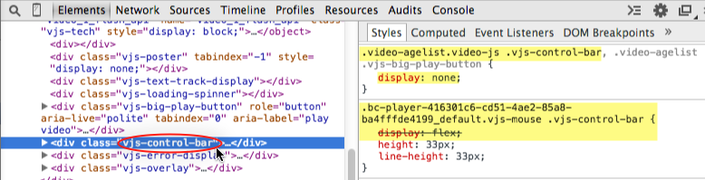

Brightcove Player Sample: Age Gate
This topic shows you how to use a Brightcove player with a simple age gate overlay. The user must certify their age by clicking on the overlay text before the video will play.
Plugins used
Note: This example uses open source video.js plugins:
- videojs-overlay : For details, refer to the Display Overlay Plugin document.
Development sequence
Select implementation
In this example, you will test with the embed_in_page code and then move the styles and scripts into separate files to test locally. Then, you will use the Embed API to append the age gate styles, script and plugin to a child player based on the properties of the parent. With this player, you can run this example as an iframe implementation.
API resources used
The following sections detail resources used from various APIs.
Brightcove player API methods
removeClass()play()
Brightcove player API events
loadedmetadata
The player
This example displays an overlay and hides the player controls and play button. When the user confirms their age by clicking on the overlay text, the controls are displayed and the video plays. Test the functionality by clicking on the text.
How it works
The following sections explain the player, JavaScript and CSS code used in the example.
Create the player
To create a player and assign a video to it, follow these steps:
- In the Players module, create a new player or use an existing one.
For this example, you will need to add the Overlay plugin to the player:
For more information about the Overlay plugin, see the Display Overlay Plugin document.
- Locate the Plugins section and click Edit.
- The JavaScript for the plugin is provided and will not change for different plugin implementations. For the JavaScript URL, enter:
http://players.brightcove.net/videojs-overlay/lib/videojs-overlay.js
- The CSS for the plugin is provided and will not change for different plugin implementations. For the CSS URL, enter:
http://players.brightcove.net/videojs-overlay/lib/videojs-overlay.css
- For the Name, enter overlay.
Enter the plugin options. The example below displays clickable text when the video data is loaded, and hides the overlay once the video starts playing.

- Click Save and then Publish the player.
- In the Media module, select a video and publish it with this player.Assign video content to the player and publish it.
- Copy the In-Page embed code and paste it into a new HTML file.
For details on how to get this embed code, see the Quick Start to Brightcove Player document.
The embed code should look like this:
The HTML code
No extra HTML code is needed for this example, until you get to the iframe implementation.
The JavaScript code
Add the following JavaScript to your page code.
Here you will use the player's addClass() and removeClass() methods to hide and then show the player controls. We'll look at the details of the video-agelist class in the next section.
- Line 99: Gets a reference to the player when it is ready.
- Line 100: Adds the class which hides the player controls and the big play button.
- Line 102: Listens for when the player has initial duration and dimension information.
- Line 103: Gets a reference to the age verification text in the overlay.
- Line 104: Listens for when the user clicks the age verification text.
- Line 105: Removes the class which hides the player controls and the big play button.
- Line 106: Starts video playback.
The stylesheet
This example uses CSS styles for the Brightcove player and the Overlay plugin.
- Lines 53-65: Override the default styles for the Overlay plugin.
- Lines 67-70: Hide the player controls and the big play button.
- Lines 72-74: Set the cursor for the age verification text in the overlay.
- Lines 76-79: Set the dimensions of the player.
Hiding player controls
Let's take a closer look at how we used CSS to hide the big play button and the control bar. For an introduction about changing the appearance of the Brightcove player, see the Customize Player Appearance guide.
First, let's change the style to hide the player's big play button.
- In the Chrome browser, open the Developer Tools.
- Right click on the player and select Inspect Element.
- In the Elements section of the Developer Tools, select the HTML associated with the big play button.
- In the Styles section, you can see that the original
displayproperty with a value ofblockis set on thedivelement.
- When overriding CSS values, more specific styles win over less specific ones. Since elements have the lowest specificity value, we can override the display property by simply specifying the
vjs-big-play-buttonclass. - Look at our CSS for the big play button below. In this example, we are saying select all elements with a class name of
vjs-big-play-buttonwhich are decendents of the element with class name ofvideo-agelist. Remember that in the JavaScript code, we added thevideo-agelistclass to the player.
Next, let's change the style to hide the player's control bar.
- In the Elements section of the Developer Tools, select the HTML associated with the player control bar.
- In the Styles section, you can see that the original
displayproperty with a value offlexis set with three class attributes in the selector. - To override the style for the control bar, we need at least three class attributes in our selector, including the
vjs-control-barclass. - Look at our CSS for the control bar below. In this example, we are saying select all elements with a class name of
vjs-control-barwhich are decendents of the element with both a class name ofvideo-agelistand a class name ofvideo-js.For more information about calculating specificity value, see the Specifics on CSS Specificity page.
Use a plugin
It is a best practice to use a plugin so that you can easily add this functionality to multiple players.
Create the JavaScript file
Move the plugin's JavaScript code to a file located on your machine for easy testing.
- Create a new file for your plugin JavaScript code. In this case, name it
age-gate.js. - Cut and paste the JavaScript code from your main HTML file into this new file.
- Lines 122,135: Wrap your JavaScript code using the
videojs.plugin()function. The first argument,ageGate, is the plugin name. - Line 123: Gets a reference to your player.
- The rest is your JavaScript code which was reviewed in a previous section.
Note: Line 135: Has a trailing semicolon at the end of the plugin's JavaScript code which is required.
- In the HTML file, add the following code just below the existing
<script>tags. This code includes the JavaScript file and then calls the method defined in that JavaScript.
- Browse the HTML page. You should see that the age gate overlay still works, except now your JavaScript code has been removed from the HTML page.
Create the CSS file
If you are using CSS, move styles to a file located on your machine for easy testing.
- Create a new file for your CSS styles. In this case, name it
age-gate.css. - In the
<head>section of your HTML file, add the following link to include your newly created CSS file.
- Browse the HTML page. You should see that the navigate on end link still works, except now your styles have been removed from the HTML page.
When you have finished testing the functionality of your plugin code, you are ready to implement the plugin in the player as described in the next step.
Implement using Players module
To implement your plugin using the Players module, follow these steps:
- Copy the plugin's JavaScript file and place it in an Internet accessible URL.
- Copy the styles file and place it in an Internet accessible URL.
- Open the Players module and locate the player.
- Click the link for the player to open the player properties.
- Locate the Plugins section and click Edit.
- For the JavaScript URL, enter the URL for the file you created in step 1.
- For the CSS URL, enter the URL for the file you created in step 2.
- For the Name, enter your plugin name. In this example, we are using ageGate.

- Click Save and then Publish the player.
- In the Media module, select a video and publish it with this player.
- Copy the In-Page embed code and paste it into a new HTML file. Your page should look similar to this:
Browse the HTML page and you should see the player with the custom age gate overlay functioning correctly.
Use iframe
It is a best practice to use the iframe player implementation. If it is possible for this example, replace the embed_in_page implementation with the iframe implementation.
Here is the complete code:
Note: Here we added a div container around the iframe element to make it easier to reference the player code.
Browse the HTML page and you should see the player with the plugin functioning correctly.